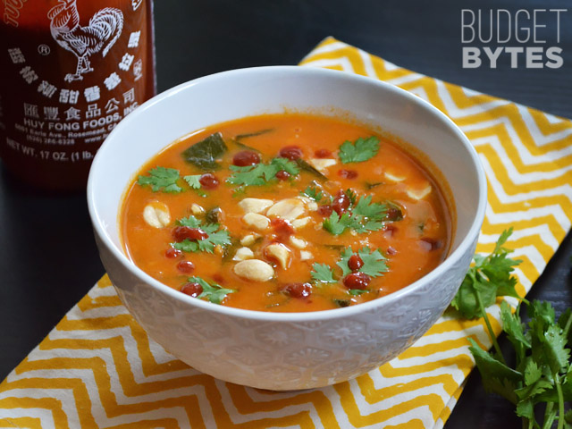

Recipes
| Recipe | Type | Difficulty | Cost($) |
|---|---|---|---|
| Spicy Peanut Noodles | Pasta | Easy | 3.23 |
| Navy Bean Soup With Sausage & Spinach | Soup | Easy | 9.42 |
| Chicken and Lime Soup | Soup | Easy | 6.39 |
| Spinach White Bean Enchiladas with Pepper Jack Sauce | Beans & Rice | Medium | 6.72 |
| Cheesy Rigatoni Skillet with Mushrooms and Spinach | Pasta | Easy | 8.76 |
| Monterrey Chicken Skillet | Pasta | Medium | 8.11 |
| Bacon Bean and Potato Soup | Soup | Easy | 7.76 |
| African Peanut Stew | Soup | Easy | 5.64 |
| Sopa de Fideo | Soup | Easy | 4.11 |
| Thai Curry Vegetable Soup | Soup | Medium | 6.10 |
| Crock-Pot Potato Soup | Soup | Easy | 6.61 |
Spicy Peanut Noodles
| Ingredient | Amount | Cost($) |
|---|---|---|
| Any Pasta | 1 lb | 1.50 |
| Peanut Butter | 2/3 cup | 0.60 |
| Soy Sauce | 1/4 cup | 0.50 |
| Cayenne Pepper | 1/4 tsp | 0.01 |
| Honey | 1 tsp | 0.04 |
| Vinegar | 2 Tbsp | 0.50 |
| Garlic | 2 cloves | 0.05 |
| Pasta Water | 1/2-3/4 cups | 0.00 |
| Red Pepper Flakes | 1-2 tsps | 0.03 |
| Total Cost | 3.23 |
Instructions
- Bring a pot of water to a boil and throw the pasta in, cook according to directions. While the pasta is boiling, dump all of the other ingredients except for the water into a heat-safe bowl.
- When the pasta is done, reserve up to 3/4 cup of the cooking water and drain the pasta.
- Slowly stream the cooking water into the bowl while whisking until you’ve achieved a smooth sauce. Make it as thick or as thin as you like.
- Toss the pasta with the sauce and then serve into 4 individual bowls. Top with red pepper flakes if desired.
Navy Bean Soup With Sausage & Spinach
| Ingredient | Amount | Cost($) |
|---|---|---|
| olive oil | 1 Tbsp | 0.16 |
| smoked sausage | 14 oz | 2.79 |
| medium onion | 1 | 0.36 |
| garlic | 2 cloves | 0.16 |
| carrots | 1/2 lb, (about 3) | 0.50 |
| celery | 3 stalks | 0.60 |
| navy beans | 4 cans | 4.00 |
| whole bay leaf | 1 leaf | 0.15 |
| dried thyme | 1 tsp | 0.05 |
| dried rosemary | 1/2 tsp | 0.03 |
| freshly cracked pepper | to taste | 0.03 |
| water | 8 cups | 0.00 |
| fresh baby spinach | 3 cups | 0.50 |
| salt | 1/2 Tbsp | 0.07 |
| apple cider vinegar | 1 tsp | 0.02 |
| Total Cost | 9.42 |
Instructions
- Slice the sausage in to medallions and add them to a large soup pot along with one tablespoon of olive oil. Saute the sausage over medium heat until it is nicely browned (about five minutes). Drain off the excess fat.
- While the sausage is browning, dice the onion, carrot, and celery into small pieces. Mince the garlic. Add the onion, carrots, celery, and garlic to the soup pot after the sausage fat has been drained off. Saute for about five minutes more. The moisture released by the vegetables will dissolve any browned bits off of the bottom of the pot.
- Drain the beans and give them a good rinse with fresh water. Add the rinsed beans to the pot along with the bay leaf, thyme, rosemary, some freshly cracked pepper, and 8 cups of water. Stir everything to combine. Turn the heat up to high and allow the soup to come up to a full boil.
- Once it reaches a full boil, turn the heat down to medium-low and allow the soup to gently boil for two hours, with the lid in place. You want the beans to go past the point of tenderness to the point where they are falling apart. Stir the pot occasionally.
- After gently boiling for a couple of hours, use a large wooden spoon to smash some of the beans against the side of the pot. This will help thicken the soup. Stir in the fresh spinach until wilted. Season the soup with salt. Start with just a 1/2 teaspoon at a time and add more until it is to your desired saltiness (I used 1/2 tablespoon total). Lastly, stir in the apple cider vinegar. Serve hot.
Chicken and Lime Soup
| Ingredient | Amount | Cost($) |
|---|---|---|
| olive oil | 2 Tbsp | 0.24 |
| yellow onion | 1 medium | 0.28 |
| celery | 2 stalks | 0.45 |
| jalapeno | 1 medium | 0.09 |
| garlic | 4 cloves | 0.32 |
| chicken breast | 3/4 lb | 1.46 |
| chicken broth | 6 cups | 0.42 |
| can diced tomatoes w/chiles | 1 (14.5 oz.) | 0.95 |
| oregano | 1 tsp | 0.05 |
| cumin | 1/2 Tbsp | 0.08 |
| lime | 1 medium | 0.33 |
| cilantro | 1/2 bunch | 0.43 |
| avocado | 1 medium | 1.29 |
| Total Cost | 6.39 |
Instructions
- Dice the onion, celery, and jalapeno (scrape the seeds out of the jalapeno before dicing). Mince the garlic. Cook the onion, celery, jalapeno, and garlic in olive oil over medium heat for about 5 minutes or until tender.
- Add the chicken breast, chicken broth, canned tomatoes with chiles, oregano, and cumin to the pot. Bring the whole pot up to a boil over high heat then reduce the heat to low, place a lid on top, and let simmer for one hour.
- After simmering for an hour with a lid on, carefully remove the chicken breast from the pot and use two forks to shred the meat. Return the meat to the pot. Squeeze the juice of one lime into the soup. Get as much juice as possible from the lime by using a spoon to scrape the inside of the lime.
- Rinse the cilantro and then roughly chop the leaves. Add to the pot, give it a quick stir, and serve. Dice the avocado and add a few chunks to each bowl.
Spinach White Bean Enchiladas with Pepper Jack Sauce
Enchiladas
| Ingredient | Amount | Cost($) |
|---|---|---|
| 6-inch corn tortillas | 12 | 1.10 |
| pepper jack cheese | 4oz | 1.00 |
| frozen chopped spinach | 1/2 lb | 0.85 |
| can white beans* | 15oz | 1.00 |
| garlic powder | 1/4 tsp | 0.02 |
| cumin | 1/2 tsp | 0.05 |
| salt | 1/4 tsp | 0.02 |
| Freshly cracked pepper | to taste | 0.02 |
| fresh chopped cilantro for garnish (optional) | a handful | 0.13 |
| Enchilada Cost | N/A | 4.19 |
Pepper Jack Sauce
| Ingredient | Amount | Cost($) |
|---|---|---|
| butter | 1 Tbsp | 0.14 |
| garlic, minced | 1 clove | 0.08 |
| cream cheese | 4oz | 1.00 |
| whole milk | ¾ cup | 0.29 |
| salt | ¼ tsp | 0.02 |
| pepper jack cheese | 4oz | 1.00 |
| Sauce Cost | N/A | 2.53 |
| Total Cost | 6.72 |
Instructions
- Toast the tortillas on each side in a dry skillet over medium-low heat until they are a slightly stiff and have browned just a bit on the edges. Stack them on a plate until ready to use. Toasting the tortillas increases the flavor and helps prevent them from cracking. Shred an 8oz. block of pepper jack cheese. Half will be used for the enchilada filling and half will be used for the sauce.
- Defrost the frozen spinach in a microwave or take it out of the freezer before beginning to allow it time to defrost naturally. Squeeze as much moisture out of the thawed spinach as possible. Place the spinach in a large bowl. Rinse and drain the white beans, then add them to the bowl with the spinach. Also add 4oz. of the shredded cheese, garlic powder, cumin, salt, and a little freshly cracked pepper. Stir until the mixture is evenly combined.
- Preheat the oven to 350ºF. Begin preparing the pepper jack sauce by adding the butter and minced garlic to a small sauce pot. Sauté the garlic in the butter for one minute over medium heat. Add the milk and cream cheese to the pot. Stir and heat until the cream cheese has fully melted into the milk and the mixture has thickened slightly. Season with salt. Begin adding the remaining shredded pepper jack, a handful at a time, and stirring it in until fully melted before adding more. Once all the cheese has been melted into the sauce, turn the heat off and allow it to cool slightly.
- Coat the inside of a casserole dish with non-stick spray. Begin filling the toasted tortillas with the spinach and white bean mixture and rolling them closed. Line up the filled tortillas in the casserole dish, seam sides facing down. Choose a casserole dish that fits 12 of the rolled enchiladas snugly to help keep them from unrolling.
- Once the tortillas are filled and in the casserole dish, pour the pepper jack sauce over top. Bake the enchiladas in the preheated oven for 35-40 minutes, or until the edges of the tortillas are brown and the pepper jack sauce is thick and browned on the edges. Sprinkle chopped cilantro over top, if desired.
Cheesy Rigatoni Skillet with Mushrooms and Spinach
| Ingredient | Amount | Cost($) |
|---|---|---|
| olive oil | 2 Tbsp | 0.26 |
| garlic | 3 cloves, minced | 0.24 |
| mushrooms, sliced | 8oz | 1.99 |
| pasta sauce (your favorite) | 24oz | 1.49 |
| fresh spinach | 1/4 lb | 1.50 |
| rigatoni | 8oz | 0.84 |
| whole milk ricotta | 8oz | 1.25 |
| grated Parmesan | 2 Tbsp | 0.20 |
| shredded mozzarella | 1 cup | 0.94 |
| salt and pepper | to taste | 0.05 |
| Total Cost | 8.76 |
Instructions
- Bring a large pot of water to a boil for the rigatoni. Once boiling, add the pasta, and continue to boil until tender. Drain in a colander and set aside until needed.
- After starting the pasta water, begin the sauce. Add the olive oil and minced garlic to a large skillet and sauté for about one minute over medium heat, or just until the garlic becomes fragrant. Add the sliced mushrooms, a pinch of salt and pepper, and continue to sauté until the mushrooms have released all their moisture and begin to brown on the edges (about 5-7 minutes).
- Add the sauce to the skillet. Stir the sauce as it heats, dissolving any browned bits off the bottom of the skillet. Once the sauce is heated through, add the spinach, and continue to stir and cook until the spinach has wilted (about 5 minutes more).
- Once the rigatoni has been cooked and drained, stir it into the skillet with the sauce and vegetables and allow everything to heat through.
- In a small bowl, stir together the ricotta, Parmesan, and a pinch of salt and pepper. Add the ricotta mixture to the skillet, in dollops over the surface. Gently fold the ricotta into the pasta, leaving it only about half mixed, so there are still pockets of ricotta within the sauce and pasta.
- Sprinkle the shredded mozzarella over the pasta, place a lid on the skillet, and let it heat over medium-low until the cheese is melted. If you want the cheese to brown a bit, place it under your oven’s broiler (without a lid) and watch closely until it develops a few browned spots. Serve hot.
Monterrey Chicken Skillet
| Ingredients | Amount | Cost($) |
|---|---|---|
| shredded pre-cooked chicken | 2 cups (1/2 rotisserie chicken) | 3.50 |
| can Rotel (diced tomatoes with green chiles) | 1 (10 oz) | 0.99 |
| fusili pasta | 1/2 lb | 0.63 |
| chicken broth | 2 cups | 0.30 |
| BBQ sauce | 1/3 cup | 0.36 |
| shredded Monterrey Jack cheese | 1 cup | 1.24 |
| bacon | 3 slices | 0.92 |
| green onions | 2, sliced | 0.17 |
| Total Cost | 8.11 |
Instructions
- Place the chicken, pasta, and Rotel tomatoes (undrained) in a large skillet. Add two cups of chicken broth and stir to combine. Cover the skillet with a tight fitting lid, turn the heat on to high, and let it come to a boil. Once it reaches a boil, reduce the heat to low and let it simmer for 15 minutes, giving it a quick stir every 5 minutes or so.
- Meanwhile, cook the bacon in a skillet until brown and crispy. Drain the cooked bacon on a paper towel, then crumble into pieces.
- After simmering for 15 minutes, the pasta should be tender and most of the liquid absorbed. If the pasta is still firm, let the skillet simmer for 5 more minutes. If the pasta is tender, but there is still a lot of liquid in the skillet, let it simmer without a lid for 5 more minutes.
- Once the pasta is cooked and most of the liquid is absorbed, drizzle the BBQ sauce over top. Sprinkle the shredded cheese over the BBQ sauce and cover the skillet with the lid. Leave the heat set on low and let the skillet sit for five minutes to melt the cheese. Once the cheese is melted, top with the crumbled bacon and sliced green onions, then serve.
Bacon Bean and Potato Soup
| Ingredients | Amount | Cost($) |
|---|---|---|
| navy beans | 4 cans | 1.79 |
| bacon | 6oz. | 2.00 |
| garlic | 2 cloves | 0.16 |
| yellow onion | 1 | 0.37 |
| carrots | 3 | 0.32 |
| celery | 3 stalks | 0.53 |
| potatoes | 1.5 - 2 lbs | 1.44 |
| chicken broth | 6 cups | 0.76 |
| tomato sauce | 8oz | 0.34 |
| salt and pepper | to taste | 0.05 |
| Total Cost | 7.76 |
Instructions
- Cut the bacon into one-inch pieces. Cook the bacon in a large pot over medium heat until brown and crispy. Remove the bacon to a paper towel lined plate and pour off most of the grease, leaving a tablespoon or two in the pot.
- While the bacon is cooking, dice the onion and mince the garlic. Peel and slice the carrots, and slice the celery. Sauté the onion, garlic, carrots, and celery in the leftover bacon grease over medium heat until the onions are soft and transparent (about five minutes). Use the moisture from the vegetables to help dissolve the browned bits of bacon from the bottom of the pot.
- While the vegetables are sautéing, peel the potatoes then cut them into ½-inch cubes. Drain the beans and rinse them briefly.
- Add the cubed potatoes, rinsed beans, and chicken broth to the pot. Cover the pot and bring it up to a boil. Reduce the heat slightly and let the pot boil gently for one hour, or until the beans and potatoes are very soft.
- Use an immersion blender to purée about half of the soup, leaving some beans and vegetables whole. If you don’t have an immersion blender, remove half of the soup from the pot, let it cool slightly, then use a blender or food processor to carefully purée the warm soup. Return the puréed soup to the pot and stir to combine with the rest.
- Add the tomato sauce and reserved bacon to the soup. Stir and heat until warm. Taste the soup and add salt and pepper if needed. Serve hot.
African Peanut Stew

| Ingredients | Amount | Cost($) |
|---|---|---|
| vegetable oil | 1 Tbsp | 0.02 |
| garlic | 4 cloves | 0.32 |
| fresh ginger | 1 inch | 0.15 |
| sweet potato | 1 medium (1 lb.) | 1.32 |
| onion | 1 medium | 0.42 |
| cumin | 1 tsp | 0.10 |
| crushed red pepper | 1/4 tsp | 0.02 |
| tomato paste | 1 (6oz.) can | 0.59 |
| chunky peanut butter | 1/2 cup | 0.93 |
| vegetable broth | 6 cups | 0.81 |
| collard greens | 1/2 bunch (2-3 cups chopped) | 0.75 |
| cilantro, garnish (optional) | 1/4 bunch | 0.21 |
| Total Cost | 5.64 |
Instructions:
- Peel and grate the ginger using a small holed cheese grater. Mince the garlic. Sauté the ginger and garlic in vegetable oil over medium heat for 1-2 minutes, or until the garlic becomes soft and fragrant.
- Dice the onion, add it to the pot, and continue to sauté. Dice the sweet potato (1/2 inch cubes), add it to the pot, and continue to sauté a few minutes more, or until the onion is soft and the sweet potato takes on a darker, slightly translucent appearance. Season with cumin and red pepper flakes.
- Add the tomato paste and peanut butter, and stir until everything is evenly mixed. Add the vegetable broth and stir to dissolve the thick tomato paste-peanut butter mixture. Place a lid on the pot and turn the heat up to high.
- While the soup is coming up to a boil, prepare the collard greens. Rinse the greens well, then use a sharp knife to remove each stem (cut along the side of each stem). Stack the leaves, then cut them into thin strips. Add the collard strips to the soup pot.
- Once the soup reaches a boil, turn the heat down to low and allow it to simmer without a lid for about 15 minutes, or until the sweet potatoes are very soft. Once soft, smash about half of the sweet potatoes with the back of a wooden spoon to help thicken the soup. Taste the soup and add salt if needed (will depend on the brand of broth used).
- Serve the stew hot with a few cilantro leaves if desired.
Sopa de Fideo
| Ingredients | Amount | Cost($) |
|---|---|---|
| onion | 1 medium | 0.41 |
| garlic | 2 cloves | 0.16 |
| vegetable oil | 2 Tbsp | 0.04 |
| uncooked vermicelli noodles | 8 oz | 0.75 |
| cumin | 1/2 tsp | 0.05 |
| whole peeled tomatoes | 1 (28 oz) can | 1.39 |
| chicken broth | 6 cups | 0.79 |
| jalapeño (optional) | 1 medium | 0.05 |
| lime | 1 medium | 0.25 |
| fresh cilantro (optional) | 1/4 bunch | 0.22 |
| Total Cost | 4.11 |
Instructions
- Dice the onion and mince the garlic so they are ready to go when needed.
- Add the vegetable oil to a large soup pot. Break the vermicelli noodles into one to two inch sections and then add them to the pot. Cook the dry noodles in the oil over medium-low heat while constantly stirring for 3-5 minutes, or until the noodles have turned golden brown and are slightly blistered.
- Add the diced onion, minced garlic, and cumin to the pot with the noodles and continue to cook and stir for a few minutes more, or until the onions have softened.
- Add a little of the juice from the can of tomatoes to the pot to stop the browning of the noodles. Use a blender or immersion blender to purée the canned tomatoes along with their remaining juices. Add the puréed tomatoes to the pot with the noodles, along with the six cups of chicken broth.
- If using a jalapeño pepper, add it to the pot whole (this gives a slight jalapeño flavor without too much heat). Place a lid on the pot, turn the heat up to medium high, and allow it to come to a boil. Let the pot simmer for about 15 minutes, or until the noodles are soft.
- Add lime juice and roughly chopped cilantro leaves to the finished soup just before serving (I used juice from half the lime, but adjust to your liking).
Thai Curry Vegetable Soup
| Ingredients | Amount | Cost($) |
|---|---|---|
| neutral cooking oil | 2 Tbsp | 0.04 |
| garlic | 2 cloves | 0.16 |
| grated fresh ginger | 1 Tbsp | 0.05 |
| Thai red curry paste | 2 Tbsp | 0.62 |
| small sweet potato (about 1 lb.) | 1 | 1.61 |
| collard greens | 1 bunch | 0.55 |
| vegetable or chicken broth | 4 cups | 0.52 |
| coconut milk | 13 oz can | 1.29 |
| fish sauce | 1/2 Tbsp | 0.07 |
| brown sugar | 1/2 Tbsp | 0.02 |
| rice vermicelli noodles | 3.5oz | 0.39 |
| red onion | 1/2 medium | 0.29 |
| lime | 1 medium | 0.17 |
| fresh cilantro | Handful | 0.17 |
| Sriracha | to taste | 0.15 |
| Total Cost | 6.10 |
Instructions
- Prepare the vegetables for the soup and garnishes first, so they’re ready to go when needed. Mince the garlic and grate the ginger using a small-holed cheese grater. Peel and dice the sweet potato into one-inch cubes. Wash the collard greens well, then chop into one-inch strips, separating the fibrous stalks from the delicate green ends. Thinly slice the red onion and roughly chop the cilantro.
- Add the cooking oil to a large soup pot along with the minced garlic, grated ginger, and Thai red curry paste. Sauté the garlic, ginger, and curry paste over medium heat for 1-2 minutes.
- Add the diced sweet potato and chopped collard greens stalks to the pot (save the leafy green ends for later) along with the chicken or vegetable broth. Bring the pot to a boil over medium-high heat, then reduce the heat to low and let simmer for 5-7 minutes, or until the sweet potatoes are tender.
- While the soup is simmering, bring a small pot of water to a boil for the vermicelli. Once boiling, add the vermicelli and boil for 2-3 minutes, or just until tender. Drain the rice noodles in a colander and set aside.
- Once the sweet potatoes are tender, add the coconut milk, fish sauce, and brown sugar to the soup. Stir, taste, and adjust the fish sauce or brown sugar if needed. Finally, add the collard greens and let them wilt in the hot soup.
- To serve, divide the rice vermicelli among four bowls. Ladle the soup and vegetables over the noodles, then top with red onion, cilantro, a wedge or two of lime, and a drizzle of sriracha.
Crock-Pot Potato Soup
| Ingredient | Amount | Cost($) |
|---|---|---|
| potato | 8 cups | 1.44 |
| onion | 1/3 cup | 0.41 |
| chicken broth | 3(14 1/2 oz) cans | .40 |
| condensed cream of chicken | 1 can | .50 |
| cream cheese | 1(8 oz) package | 2.00 |
| bacon | 1/2 lb cooked | 1.86 |
| Total Cost | 6.61 |
Instructions
- Combine potatoes, onion, broth, and cream of chicken soup in crock pot.
- Cover and cook on low 8-10 hours or until potatoes are tender.
- Add cream cheese and blend. Add salt and pepper to taste.
- Top with bacon and chives before serving.